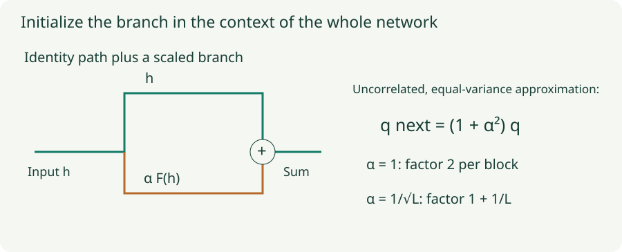

Residual and Transformer Initialization: Start the Whole Architecture
Derive why unscaled residual streams grow as $2^L$, how $1/\sqrt{L}$ and zero-initialized branches tame depth, and why attention divides by $\sqrt{d_k}$.
Initializing each layer to preserve variance in isolation is not enough when an architecture adds residual branches or takes dot products between activations. Residual connections accumulate variance across blocks, and attention dot products grow with head dimension $d_k$.
1. Residual accumulation: why $\alpha=1/\sqrt{L}$ replaces $2^L$ with $e$
Consider a residual block $h_{l+1}=h_l+\alpha F_l(h_l)$. For any coordinate, the variance of the sum is
At initialization, fresh zero-mean weights inside $F_l$ make $\operatorname{Cov}(h_l,F_l(h_l))=0$ in expectation, and standard layer initialization matches $\operatorname{Var}(F_l(h_l))=q_l=\operatorname{Var}(h_l)$. Each block therefore multiplies the stream variance by $1+\alpha^2$:
- Unscaled branches ($\alpha=1$): Each block doubles the variance ($q_{l+1}=2q_l$), so after $L=40$ blocks the variance grows by $2^{40}\approx 1.1\times 10^{12}$.
- Depth-scaled branches ($\alpha=1/\sqrt{L}$): Each block multiplies variance by $1+1/L$, so after $L$ blocks the total growth is bounded at any depth:
$$q_L=\left(1+\frac1L\right)^L q_0\xrightarrow{L\to\infty}e\,q_0\approx 2.718\,q_0.$$(In GPT-style Transformers with $2L$ residual additions from $L$ attention + $L$ MLP sublayers, the output projection of each sublayer is scaled by $1/\sqrt{2L}$.)
- Zero-initialized branches ($\alpha=0$): Starts as an exact identity mapping $q_L=q_0$.

2. Lab: measure accumulation through a residual chain
Identity plus a sampled linear branch
The model is $h_{l+1}=h_l+\alpha W_lh_l$, with width 32, independent Gaussian weight entries of variance $1/32$, and 64 Gaussian inputs. It has no normalization or activation. Compare measured signal growth with the ensemble prediction $(1+\alpha^2)^l$, and inspect backward derivative growth through the same matrices.
3. How zero-initialized residual branches and gates still learn
Chapter 1 showed that setting all weights of a plain layer to zero blocks learning. Why can a residual branch $h^+=h+W_2\phi(W_1h)$ safely set its final matrix $W_2=0$ while keeping $W_1$ random?
Let $g=\partial\ell/\partial h^+$ be the upstream gradient. At initialization ($W_2=0, W_1\ne 0$), the gradients for the two matrices are:
- Zero final projection (ResNet zero-$\gamma$ / Fixup): Because $W_1\ne 0$, the hidden features $\phi(W_1h)$ are nonzero, so $W_2$ receives a nonzero gradient on step 1! Once $W_2$ becomes nonzero after step 1, $W_1$ receives nonzero gradients on step 2 and onward. (Fixup combines $W_2=0$ with scaling the remaining $m-1$ branch layers by $L^{-1/(2m-2)}$.)
- ReZero ($h^+=h+\alpha F(h)$ with scalar $\alpha=0$): On step 1, the gate gradient is $\partial\ell/\partial\alpha=g^\top F(h)\ne 0$, moving $\alpha$ off zero so the branch weights inside $F$ learn on subsequent steps.
4. Transformers: $\sqrt{d_k}$ attention scaling and Pre-LN vs. Post-LN
In self-attention, a query $q\in\mathbb R^{d_k}$ and key $k\in\mathbb R^{d_k}$ form logit $s=q^\top k=\sum_{j=1}^{d_k}q_jk_j$. If coordinates $q_j,k_j$ are independent with mean $0$ and variances $v_q,v_k$, then $\operatorname{Var}(q_jk_j)=v_qv_k$, so summing $d_k$ terms gives:
For $v_q=v_k=1$ and $d_k=64$, raw dot products have standard deviation $\sqrt{64}=8$, pushing softmax probabilities toward $0$ or $1$ where softmax gradients vanish. Dividing by $\sqrt{d_k}$ restores unit variance.
Finally, normalization placement changes the residual gradient highway:
- Pre-LN ($h^+=h+F(\operatorname{LN}(h))$): The identity shortcut bypasses LayerNorm, so $\frac{\partial h_L}{\partial h_0}=I+\sum_l\frac{\partial}{\partial h_0}F_l(\operatorname{LN}(h_l))$ preserves a direct gradient path from output to input at step 0.
- Post-LN ($h^+=\operatorname{LN}(h+F(h))$): Every block multiplies the shortcut gradient by $\operatorname{LN}$’s Jacobian, diluting the identity path as unscaled branches accumulate and typically requiring learning-rate warmup.
# GPT-2 style residual output projection scaling (2*L sublayers total)
for name, p in model.named_parameters():
if name.endswith(("attn.c_proj.weight", "mlp.c_proj.weight")):
torch.nn.init.normal_(p, mean=0.0, std=0.02 / math.sqrt(2 * num_layers))5. Questions worth answering
Because adding two uncorrelated signals adds their variances: $\operatorname{Var}(h_l+F_l(h_l))=\operatorname{Var}(h_l)+\operatorname{Var}(F_l(h_l))\approx 2\operatorname{Var}(h_l)$, compounding as $2^L$ across $L$ blocks.
Because $\partial\ell/\partial W_2=g\,\phi(W_1h)^\top$. If $W_1$ were also zero (with $\phi(0)=0$), both $\partial\ell/\partial W_2$ and $\partial\ell/\partial W_1$ would be zero and the branch would never wake up.
No. It only cancels the $d_k$ summation factor in $\operatorname{Var}(q^\top k/\sqrt{d_k})=v_qv_k$; the projection matrices $W_Q,W_K$ and input LayerNorm must still keep $v_q\approx 1$ and $v_k\approx 1$.
Sources
Zhang et al., Fixup Initialization; Bachlechner et al., ReZero; Vaswani et al., Attention Is All You Need; Xiong et al., On Layer Normalization in the Transformer Architecture.